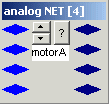
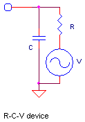
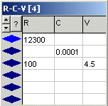

December 2002
JALss, Analog Devices
|
Analog NET This device is used to connect more than 2 analog IO's (upto a maximum of 16) together to form a analog net. With the up-down button, less ort more IO-pins can be made visible. A already connected pin can not be made invisible. If another device tries to connect to an invisible pin, the invisible pin is created and shown. For the highest speed, make only pins visible that are connected. So the example on the right is not an optimal speed example. WARNING, a analog net may not be connected to another analog net. |
 |
|
R-C-V device This Device implements a number of static (DC) analog networks, all with one side connected to the analog ground. R = resistance in Ohm (Integer, >= 1 Ohm; 0Ohm=infinite) C = capacitance in nF (real) V = voltage in V (real) If one of the values R, C or V is left empty, it's supposed not to be present. In the case the resistor is left empty, of course also the voltage source isn't connected to the outside world. When one (or more) of the values in the stringgrid changes, the header will be colored red. By pressing the ENTER key, the modified values will become active (and the header's color will change back to neutral). |
 |